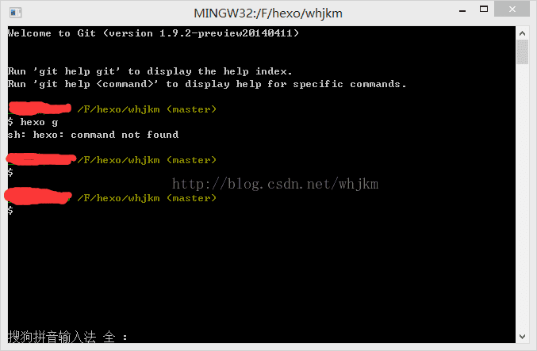

git-bush-中command-not-found-可能問題
2018-03-20
在我許久沒有更新自己的page后的某個午後，閒來無聊想發點東西當做筆記和積累，但是卻發現按之前的操作，在git bush 中輸入了命令后卻提示一個錯誤。

按照字面上的翻译就是:找不到所使用的命令。我猜想是<fontcolor=”#FF0000”>由於在錯誤的路徑輸入了命令，我因為許久沒有使用忘記了hexo所在路徑。但是在先查看各种工具是否都安装好的過程中： 在命令行中输入node -v 然后再检查npm -v，發現均提示相同錯誤，我想這不是單純錯誤路徑導致的。
-
在嘗試許久后查閱各種網站后，我意識到問題在於我的系統環境變量！也許是之前在配置opencv openNI
時誤刪到，或者在安裝node_js和hexo初期就沒有配置正確!
-
要讓git bash 能找到命令的正確路徑，就必須在
我的電腦右鍵-屬性-高級系統設置-環境變量-PATH中添加(以本人的路徑舉例)
E:\Node_js
C:\Users\yj\zhaomengxiao.github.io\node_modules\hexo\bin
C:\Users\yj\zhaomengxiao.github.io\node_modules\.bin
%這可能不需要，多加不會有事^_^
-
配置完成后記得重啟電腦 ，系統環境變量才會生效！
然後再在git中輸入命令，你會發現可以顯示版本號了！